Ультразвуковой увлажнитель H701
Технические характеристики
Напряжение: 220 В
Частота: 50 Гц
Мощность: 35 – 110 Вт
Габариты (ВхШхГ): 314х175х316 мм
Объем резервуара для воды: 6 л
Эффективная площадь увлажнения: 70 м2
Макс. производительность: 600 мл/ч
Вес: 5 кг
Сделано в Корее
Комплектация
Увлажнитель воздуха: 1 шт.
Ионный фильтр: 1 шт.
Щетка для чистки: 1 шт.
Руководство по эксплуатации с гарантийным талоном: 1 шт.
Фильтр Nano Silver оснащен картриджем с ионной смолой, которая эффективно смягчает воду, поглощая содержащиеся в ней соли и минералы, что полезнее для здоровья и самочувствия.
В фильтрах к модели Н701 будет использована ионообменная смола нового поколения TRILITE KH80 , имеющая гелиевую структуру. TRILITE KH80 обладает высокими эксплуатационными возможностями, превосходной механической и химической устойчивостью и большим количеством цельных гранул. Все эти свойства помогут Вам легко и быстро получить чистую воду.
Интуитивно понятное управление
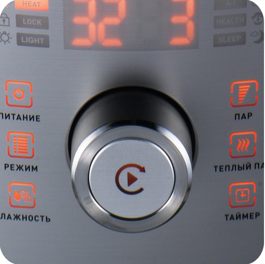Интуитивно понятное символьное сенсорное управление в сочетании с современным электронным шатлом, сделают процесс перехода между функциями и ручными программами лёгким для любого пользователя.
Нажмите одну кнопку и наслаждайтесь комфортным микроклиматом
Автоматические программы
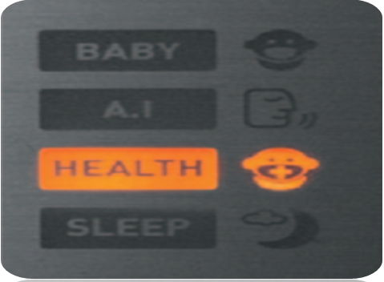Интуитивно понятное символьное сенсорное управление в сочетании с современным электронным шатлом, сделают процесс перехода между функциями и ручными программами лёгким для любого пользователя.
Позаботится о вашем ребёнке!
Установит оптимальную влажность!
Повысит иммунитет!
Поможет вам выспаться!
Удобная конструкция
Наполнение водой удобным для вас способом за секунды.
Конструкция бака для воды позволяет как заливать воду внутрь, так и без труда извлекать бак и переносить за специальную ручку. Крышка бака открывается одним движением. Широкая горловина сделает процесс залива воды быстрым и комфортным.
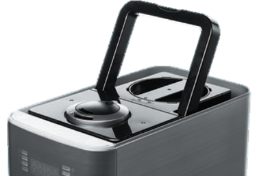
Ультразвуковой увлажнитель H701
Производительность - 600мл/ч, потребление - 110 Вт
Высокая производительность при низком энергопотреблении
Изменения коснулись также формы и размера выпускного отверстия. Все это позволило значительно повысить эффективность увлажнения. В авто-режимах интенсивность увлажнения выбирается автоматически в зависимости от разницы между требуемым и текущим уровнем влажности. Также в авто-режиме уровень влажности выбирается автоматически в зависимости от температуры.
Исследования
Компьютерный анализ водной взвеси – с использованием фильтра Fine Mist
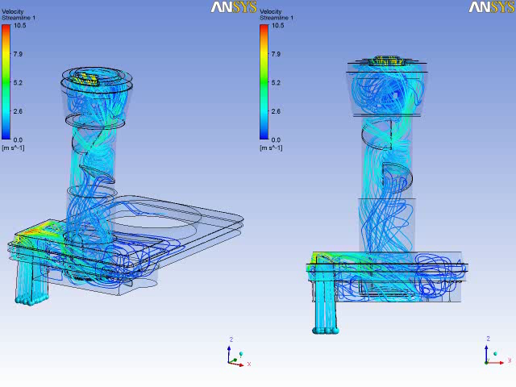Компьютерный анализ водной взвеси – до изменений
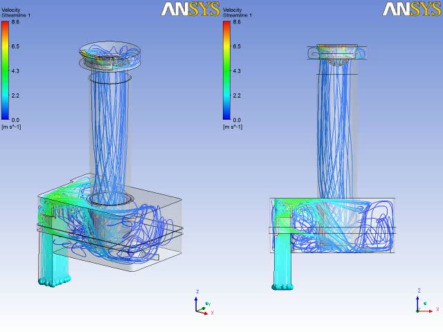Произведен компьютерный анализ потока водной взвеси для улучшения качества увлажнения
Хорошее качество увлажнения = Высокая эффективность, не только за счет большого количества водной взвеси
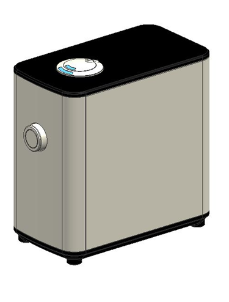 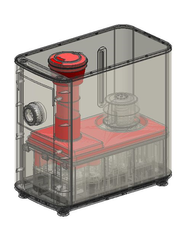 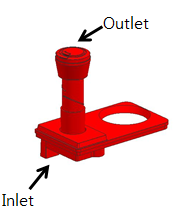Были внесены изменения в конструкцию -> Увеличение насыщенности пара
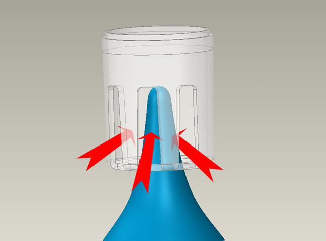 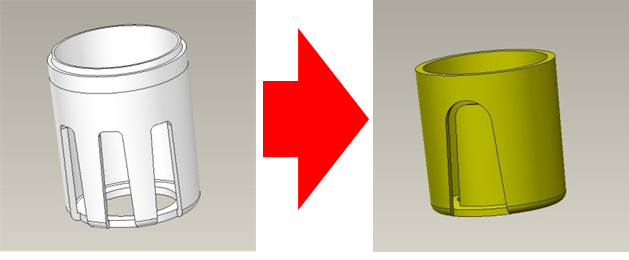
В воздушной камере формируется водяной столб
Когда столб воды контактирует (разбивает водяной столб) с воздушным потоком происходит потеря количества влаги
Изменённая форма камеры препятствует «разрушению» водяного столба воздухом
Получаем увеличение насыщенности пара на 10.9%
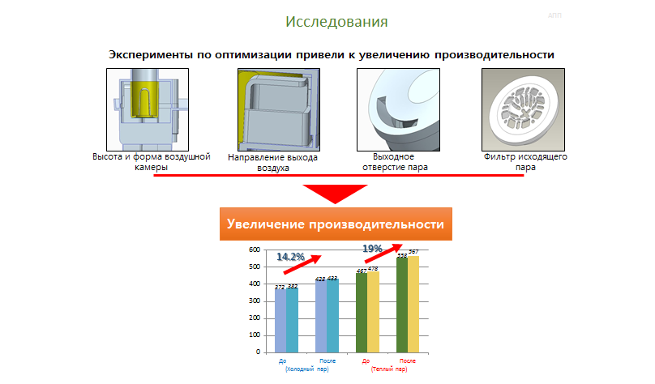 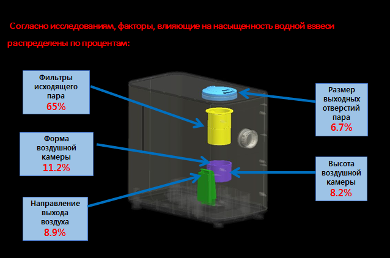Fine Mist Filter
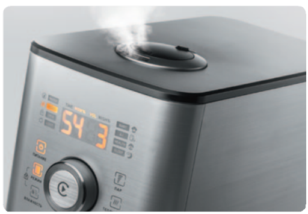 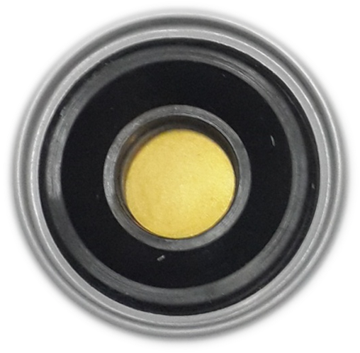Мембрана с покрытием из Нитрида-титана TiN
Мембрана с покрытием из Нитрида-титана TiN - обладает высокой износостойкостью тем самым увеличивается ресурс работы увлажнителя.
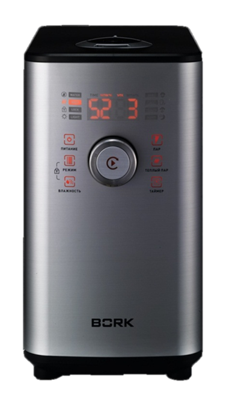Особенности
- Новые технологии Fine Mist
- Высокая производительность
- Удобная конструкция
- Автоматические программы
- Интуитивно понятное управление
- Стильный дизайн
- Высокая надёжность